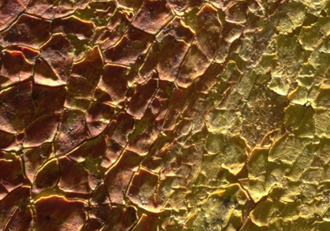
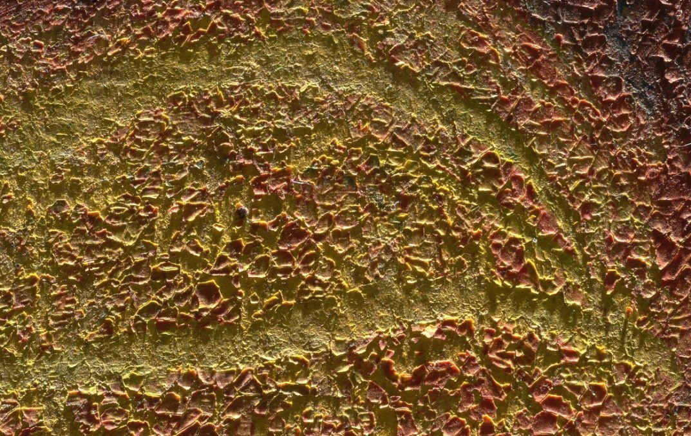

**Léon Spilliaert**

Léon Spilliaert Vision. Élie sur le char de feu , pastel, détrempe et crayon sur carton (détail : écailles aux bords relevés)
La photographie en lumière rasante révèle également les interventions de l'artiste. On peut observer comment Spilliaert, dans sa quête de la composition juste, a incisé des lignes dans une couche de peinture rougeâtre encore fraîche pour révéler par contraste la couleur jaune sous-jacente et ainsi modeler la figure. Cette technique atteste de sa méthode de travail délibérée et parfois singulière. Enfin, l'éclairage rasant aide à l'identification des différents matériaux. On peut alors différencier les couches plus fines, comme le crayon ou un pastel appliqué d'un geste léger, et des matières plus épaisses et pâteuses tels que les crayons gras (à l'huile ou à la cire) et la détrempe. Les superpositions complexes de techniques dans l'œuvre de Spilliaert sont ainsi mises en évidence.

Léon Spilliaert Vision. Élie sur le char de feu , pastel, détrempe et crayon sur carton (détail : médias grattés)
*Crédits photos : © MRBAB, Bruxelles / photo : J. Geleyns - Art Photography | © KU Leuven/Marie-Noëlle Grison; stitching and dynamic visualisation: Robert G. Erdmann (University of Amsterdam)*
**Léon Spilliaert**
Léon Spilliaert Visioen. Elias op de vuurwagen , pastel, verf en potlood op karton (detail: schilfers/flakes met opstaande randen)
De belichting met scheerlicht legt ook bepaalde ingrepen van de kunstenaar bloot. We kunnen zien hoe Spilliaert, in zijn zoektocht naar de juiste compositie, lijnen in de natte roodachtige verflaag heeft weggehaald om de contrasterende gele kleur eronder bloot te leggen en zo de figuur op te bouwen. Deze techniek getuigt van zijn doordachte en soms onconventionele werkwijze. Ten slotte helpt het scheerlicht ons de verschillende materialen te identificeren. We kunnen onderscheiden waar dunnere lagen, zoals potlood of licht aangebrachte pastel, contrasteren met dikkere, meer pasteuze materialen als olie- of waskrijt of verf. Zo wordt de complexe gelaagdheid van Spilliaerts werk zichtbaar.
Léon Spilliaert Visioen. Elias op de vuurwagen , pastel, verf en potlood op karton (detail: weggekrast medium)
*Fotocredits: © KMSKB, Brussel / foto: J. Geleyns - Art Photography | © KU Leuven/Marie-Noëlle Grison; stitching and dynamic visualisation: Robert G. Erdmann (University of Amsterdam)*
**Léon Spilliaert**
Léon Spilliaert Vision. Elijah in the Chariot of Fire , pastel, paint and pencil on cardboard (detail: flakes with raised edges)
Raking light photography also reveals the artist's interventions. We can see how Spilliaert, in his search for the right composition, carved lines into a wet reddish paint layer to expose a contrasting yellow colour underneath and build up the figure, a technique that testifies to his deliberate and sometimes unconventional working method. Finally, raking light helps us to identify the different materials. We can distinguish where thinner layers, such as pencil or lightly applied pastel, contrast with thicker, pasty materials like oil- or wax-based crayon and paint. In this way, the complex layering of Spilliaert's work becomes visible.
Léon Spilliaert Vision. Elijah in the Chariot of Fire , pastel, paint and pencil on cardboard (detail: scratched medium)
*Photo credits: © RMFAB, Brussels / photo: J. Geleyns - Art Photography | © KU Leuven/Marie-Noëlle Grison; stitching and dynamic visualisation: Robert G. Erdmann (University of Amsterdam)*